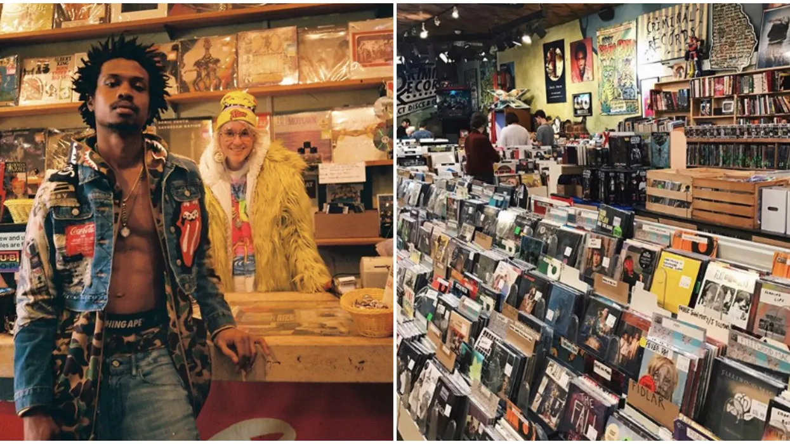

Honey Records
Our History
Our story goes back as far as the 70s. Back then the company was only a small music store called "Pucket Vinyls and stuff" and was one of the most respected business in the neighborhood. Nowadays we try to still keep the memory alive while still advancing with the times.
Started from two dreamers who barely knew each other, Honey Records was a vinyl renting shop that flourisbed into the dynamic internet you see today. Who are these dreamers? Sam Pucket and Cat Valentine felt burnout from their corporate jobs and came together with their mutual love of music, specifically through a vinyl lovers discord server. After two years of just talk of turning Sam's family Vinyl shop into a website, the two finally decided to make their dreams reality and launched HoneyRecords.com in 2019.